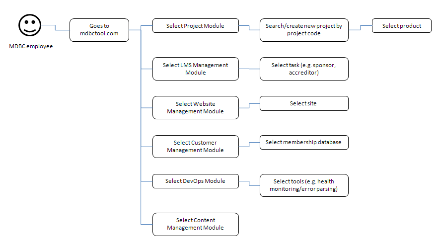
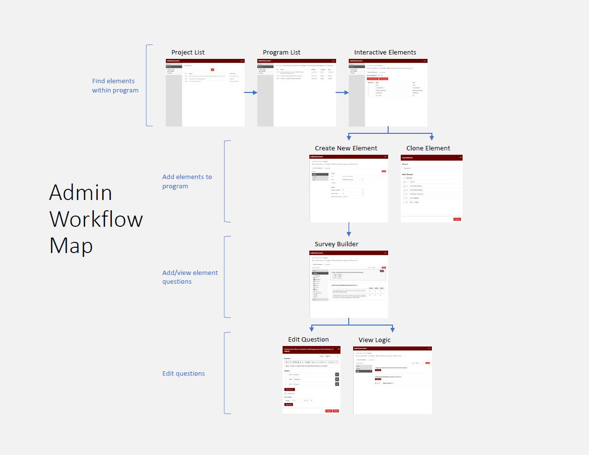

Admin Tool (and CMS)
MDBriefCase produces online continuing education for healthcare professionals. As each course is developed, it goes through the project management, content development, IT, marketing, and sales teams. Each team manages courses in their own way, leading to poor collaboration between teams.
Tools used: Adobe XD
Project Goal
To create a content management system that can be used by everyone in the company to manage and develop courses.
User Interviews
I started with conducting individual user interviews with members of the marketing, project management, and content development teams. I observed them as they carried out their everyday tasks, then I asked about their processes, what challenges they face, and if there were any features or improvements they would like to see.
Challenges
1. Each team has their own way of managing projects
For example, each team had their own way of identifying projects. The sales and project management teams referred to projects by the project code; the content development team used the program ID; and the marketing team went by the program name.
2. Limited resources
This project is entirely for internal users, so we could not devote many resources to developing it.
Brainstorm
I worked with the Director of IT and the Business Analyst to brainstorm requirements and user flows. As users from different job positions will be accessing this tool, we needed to define the information architecture and group tasks in a way that made sense to each user group while still pursuing consistency between the different teams.

Brainstorming user flows and information architecture on a whiteboard.
The Solution
Build standalone modules within the website.
By breaking down the project into modules, we can focus on specific user groups and tasks and stagger the development to mitigate the key challenges. Any updates or new features can be added separately, without needing to recreate the entire site.

Brainstorming information architecture: modules.
The First Module
The first module we decided to build out was the interactive elements portion of the content management system. Interactive elements within our courses include surveys (short answer, checkboxes, ranking) and multiple-choice questions with answers. This was chosen as our first module because an upcoming project for a client had new requirements which allowed us to put resources towards the tool.
As I was previously a content developer, I was familiar with what the tool needed to do as well as the limitations of the current system. The new tool should be intuitive and content developers should not need to use multiple tools to create interactive elements.
Competitor Analysis
To gather ideas about how to create an intuitive interface to develop interactive elements, I looked at popular survey creation tools such as SurveyMonkey and SurveyJS. Two features I identified as being key to improving development times and usability were:
- Drag-and-Drop Selectors
Content developers currently need to memorize the code structure around each type of question to build it out in XML. With XML, the learning curve and development time is high. - WYSIWYG Editor
To minimize onboarding time for new employees, format editing should use a WYSIWYG editor or allow HTML tags.
Prototype
I created a series of mockups with Adobe XD and added interaction notes and animations. I held a meeting with the content developers and walked them through the screens and process to gather feedback.

Workflow map presented to content development team.
Conclusion
Due to the scope of the project and limited internal resources, this project is being developed with an out-of-the-box content management system.